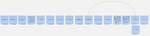

天の月
https://aki-m.hatenadiary.com/
ソフトウェア開発をしていく上での悩み, 考えたこと, 学びを書いてきます(たまに関係ない雑記も)
フィード
大人のソフトウェアテスト雑談会 #244【もみの木】に参加してきた
天の月
ost-zatu.connpass.com 今週もテストの街葛飾に行ってきたので、会の様子と感想を書いていこうと思います。 葛飾例大祭 テスト開発手法 おおひらさんの20代 全体を通した感想 葛飾例大祭 自分の子供がインフルエンザになってしまった関係で行けない可能性があるという話から、最悪Zoomで配信するよというやさしいコメントをかけていただきました。 テスト開発手法 VSTePに関して、にしさんから口伝で教わった際のエピソード*1を聞いたり、あれは現場では使えないとある人がぶっちゃけて言っていたという話を聞いたりしました。 その流れでテスト開発手法の話になり、HAYST法は組み込み開発の文…
10時間前
【教育心理学関係読書会】次に読む本を選ぶ会！！に参加してきた
天の月
educational-psychology.connpass.com こちらのイベントに参加してきたので、会の様子と感想を書いていこうと思います。(30分くらい遅れての参加でした) 紹介されていた本 「深い学び」と教え方の科学: 認知心理学による学びの深化論 心の社会 ミンスキー博士の脳の探検 ―常識・感情・自己とは ファスト＆スロー 心と現実 私と世界をつなぐプロジェクションの認知科学 自己調整学習 主体的な学習者を育む方法と実践 学びのコミュニティづくり 影響力の武器 新装版アブダクション 新人が学ぶということ 因果推論の科学 科学的根拠（エビデンス）で子育て 教育経済学の最前線 授業を…
2日前
生成AI時代を支えるプラットフォームに参加してきた
天の月
generative-ai-conf.connpass.com こちらのイベントに参加してきたので、会の様子と感想を書いていこうと思います。 会の概要 会の様子 井崎さん(NVIDIAの講演) 久保さん(AWS Japanの講演) 菅野さん(Snowflakeの講演) 会全体を通した感想 会の概要 以下、イベントページから引用です。 今回のイベントでは、生成AIを支えるプラットフォームであるエヌビディア合同会社から井﨑 武士様、アマゾンウェブサービスジャパン合同会社から久保 隆宏様、Snowflake合同会社から菅野 翼様をお招きして、「生成AI時代を支えるプラットフォーム」をテーマにLT会を…
2日前

スクラムフェス金沢2025の打ち合わせ(3回目)に参加してきた
天の月
aki-m.hatenadiary.com スクラムフェス金沢2025に向けた準備をしてきたので、会の様子と感想を書いていこうと思います。 会場決め ランチ 会場予約 開催趣意書修正 スタッフミーティングの日程 会場決め 会場はITビジネスプラザ武蔵でいいという話があったのですが、開場が10時ということだけが懸念だという話が出ました。ただ、他にいい場所があるかという話もありますし、少し後ろ倒しするくらいなら問題ないのでは？ということで、ITビジネスプラザ武蔵になりました。 ランチ 前回ごみの回収が大変だった*1という問題があったので、ランチはそれぞれが食べにいく形がいいのではないか？という話に…
3日前

クラウドセキュリティを再吟味するために〜実例から学ぶ、考慮すべき観点とその対策事例〜に参加してきた
天の月
https://findy.connpass.com/event/337675/ こちらのイベントに参加してきたので、会の様子と感想を書いていきます。 会の概要 会の様子 Snykで始めるセキュリティ担当者とSREと開発者が楽になる脆弱性対応 マルチプロダクト開発の現場でAWS Security Hubを1年以上運用して得た教訓 ガバメントクラウドから考えるクラウドセキュリティ 10分で学ぶKubernetesコンテナセキュリティ 会全体を通した感想 会の概要 以下、イベントページから引用です。 セキュリティインシデントが相次ぐ昨今、その対策の重要性が非常に高まっています。中でもクラウドについ…
4日前

yr-learning Vol48に参加してきた
天の月
yr-camp.connpass.com こちらのイベントに参加してきたので、会の様子と感想を書いていこうと思います。 昨日の結果共有と方針決め Kotlinの環境構築 TypeScriptの環境構築 昨日の結果共有と方針決め 昨日色々イベントストーミングの知見不足で詰まることがあってうまくいかなかったことを昨日いなかった参加者に共有した後、今日以降の方針を決めました。結論、Kotlinでペアプロをしていこうという話になりました。 また、スクラムフェス沖縄のDay2で自分が書いたブログを読んでくれていた人から、ブログを読んで色々気になったこと(どんな様子だったのか？イベントストーミングが重くて…
5日前

yr-learning Vol47に参加してきた
天の月
https://yr-camp.connpass.com/event/339996/ こちらのイベントに参加してきたので、会の様子と感想を書いていこうと思います。 イベントストーミングの続きをやってみる 沖縄のOSTのふりかえり 次回やること イベントストーミングの続きをやってみる 前回やったイベントストーミングの続きをしていきました。ただ、大きな効果を実感した前回と違い、今回はいろいろなところで詰まり、一度イベントストーミングの経験があったり知見が深い人に実演してもらったりしないといけなさそうだよねという話をしました。 具体的に詰まった所としては以下です。 イベントの後にリードモデルを書くべ…
6日前

スクラム祭りの打ち合わせ(17.5回目)をしてきた
天の月
aki-m.hatenadiary.com 前回出た話を踏まえて、スクラム祭りのkeynoteに関する打ち合わせをしてきたので、話したことをまとめます。 今回は自分が前回の運営の話も踏まえて、keynoteを依頼したいと思っていた人に直接話しをしてきました。 keynoteで話してもらいたいことや期待している行動変容を伝える keynoteで話せそうな内容 Next Action keynoteで話してもらいたいことや期待している行動変容を伝える 昨今コロナも徐々に落ち着いてオンサイトでの大規模*1なカンファレンスやオンラインで数100人が集まるような大規模なイベントが増えてきた一方で、小さく…
7日前

スクラム祭りの打ち合わせ(17回目)をしてきた
天の月
aki-m.hatenadiary.com こちらの打ち合わせをしてきたので、会の様子と感想を書いていこうと思います。 今日はひたすらkeynoteでどんな話をしてほしいか、誰にしてほしいか、という話をしていました。 keynoteで聞きたい話の言語化 地域カンファレンスとの差別化 keynoteで聞きたい話の言語化 そもそもスクラム祭りを立ち上げている経緯にも重なるのですが、ここ数年間コミュニティで得た知識や経験を活用して仕事で活躍したりしている人を個人的に何人も見ていて、その人たちの特徴として、「小さめな(少人数の)特に強いつながりを持っている」というのがある気がしていて、こういったつなが…
8日前

スクラムフェス沖縄Day2に参加してきた
天の月
www.scrumfestokinawa.org Day1に引き続きスクラムフェス沖縄に参加してきたので、会の様子と感想を書いていこうと思います。 Kiroさんにペアプロしてもらう カレーを食べに行く 川口さんKiroさんOgasawaraさん佐野さん頭取Akiさんたちと雑談する えわさん稲野さんと話す Hisaさんと話す ワークショップ開催 クロージング&写真撮影 全体を通した感想 Kiroさんにペアプロしてもらう OSTのテーマで川口さんがTDD(ただだべる)を出していたところ、Kiroさんが本当のTDDの話をしだしており、それならもう「真・TDD」というテーマでOSTのテーマとしてやった…
9日前
スクラムフェス沖縄2024の登壇ふりかえり
天の月
スクラムフェス沖縄2024で登壇してきたのでそのふりかえりです。 スライド 準備編 実施当日 全体を通した感想 スライド speakerdeck.com 準備編 今回は2024年に運良く継続的に登壇してきたスクラム系カンファレンスたちの締めくくりということで、気合を入れていました。 ただ、プロポーザルの段階で一通りシュミレーション&ちょっとした実験はしていたこととワークショップということもあり、スライドの準備という意味ではすぐに終わっていたので、あとはどの手法をワークショップに取り入れるかという部分だけがネックになっていました。 ここは結果的に非常に悩み、色々時間をかけることになったのですが、…
11日前
スクラムフェス沖縄 Day1に参加してきた
天の月
www.scrumfestokinawa.org 今日からスクラムフェス沖縄に参加しているので、会の様子と感想を書いていこうと思います。 会場到着まで 荒井さんとお話する ogasawaraさんとお話する 玉子寿司さんとお話する isseiさんとお話する 一次会 帰宅まで 会場到着まで 今回諸情による会場から20kmほどの場所に宿泊していて、一応バスで一本(40分弱)ということだったので16時くらいに宿を出たのですが、到着予定のバスが来るまで30分待ち、会場に到着するまでは100分かかるという沖縄の洗礼を浴び、18時すぎに会場に到着しました笑 荒井さんとお話する 会場に入ってまずは荒井さんとお…
11日前
アジャイルカフェ@オンライン 第64回に参加してきた
天の月
https://agile-studio.connpass.com/event/338444/ こちらのイベントに参加してきたので、会の様子と感想を書いていこうと思います。 会の概要 会の様子 自律的である状態とは？ 自律的でない状態とは？ 自律的な振る舞いを増やすためにやることは？(スクラムマスターへの依存編) 自律的な振る舞いを増やすためにやることは？(ゴール設定に無関心編) 「ステークホルダーを呼んで欲しい」とお願いしたときに呼んでくれたなら自律的か？逆にPOの強い想いがあって呼ばないと判断したら自律的か？ 会全体を通した感想 会の概要 アジャイル実践者からのお悩みに対して、アジャイルコ…
12日前

yr-learning Vol46に参加してきた
天の月
yr-camp.connpass.com こちらのイベントに参加してきたので、会の様子と感想を書いていこうと思います。 今日はTrading Card Game Kataのモデリングをやっていきました。 先週の取り組みの簡単な共有 イベント洗い出し アクター/コマンド/ポリシー/集約の追加 全体を通した感想 先週の取り組みの簡単な共有 先週の取り組みを簡単に共有し、今回は前回よりは少し難しめのお題でイベントストーミングをやってみようという話をしました。 イベント洗い出し イベントを洗い出しながらハッピーパスをフローで表現してみました。最初にブレスト形式でイベントを洗い出した後、みんなで出したも…
13日前

大人のソフトウェアテスト雑談会 #242【囲碁】に参加してきた
天の月
https://ost-zatu.connpass.com/event/339611/ 葛飾例大祭 テスト系のイベント オンライン勉強会 JSTQB デシジョンテーブル 状態遷移テスト 全体を通した感想 葛飾例大祭 いよいよ葛飾例大祭が開催されるということでその話をしていきました。 実は一番長いオンライン区長のお言葉 keynote4本立て 昼休憩なし Youtube？で中継される可能性あり が見どころだということです。 テスト系のイベント やまずんさんが主催しているものを中心に、テスト系のイベントがいくつか紹介されていました。 warai.connpass.com over-30-start…
14日前
スクラム祭りの打ち合わせ(16回目)をしてきた
天の月
aki-m.hatenadiary.com こちらの打ち合わせをしてきたので、会の様子と感想を書いていこうと思います。 HPを直す keynote検討 HPを直す 今日は最初二人しか参加者がいなかったので、もともとやる予定だったふりかえりはやめて、XP祭り運営の直近の様子(ちょうど今日忘年会だったらしいです)をゆるゆる話しながらHPを直していました。 VenueのところにScheduleが記載されているのがよくわからなかったので場所を移動しました sessionに関して言及されているセクションが複数あったので一つのセクションにしぼり、他のセクションからはSessionの言及を消しました Ses…
15日前
子育て1年半のふりかえり
天の月
子育てエンジニア Advent Calendar2024に投稿しようと思っていたら登録ミスっていてできていなかったので、投稿予定だった記事の供養です。 adventar.org 子育てして１年半くらいした現断面でのふりかえりとして、子供ができる前の生活と比べて、続けていること/減らしたこと/やめたこと/始めたこと/増やしたことをそれぞれ書いてみます。 続けていること ブログ Writing code every day 減らしたこと コミュニティ活動(参加) 読書する時間 やめたこと 毎日のふりかえり パーソナルコーチング 始めたこと 運動 コミュニティ活動(運営) 増やしたこと 家族と過ごす…
16日前
AIロボット・完全自動運転 開発の魅力と課題 - Jizai石川さん、Turing山口さんに聞く！に参加してきた
天の月
findy.connpass.com こちらのイベントに参加してきたので、会の様子と感想を書いていこうと思います。 会の概要 会の様子 Jizaiが進める生成AIプロダクト開発のご紹介 Turing株式会社が取り組む自動運転・生成AI開発について パネルディスカッション ハードウェアに大規模言語モデルを搭載するためには？ ハードウェア開発ならではのAI開発の面白さや課題 AIのブラックボックス問題に対してどう対応するのか？ 会全体を通した感想 会の概要 以下、イベントページから引用です。 本イベントは、株式会社Jizai CEO 石川さんとTuring株式会社CTO 山口さんのお二方をお招きす…
17日前
部門の垣根を越えて挑む業務改善のリアル - Encraft #20に参加してきた
天の月
部門の垣根を越えて挑む業務改善のリアル - Encraft #20 - connpass こちらのイベントに参加してきたので、会の様子と感想を書いていこうと思います。 会の概要 会の様子 セッション1〜コーポレートデータマスタ構築への道〜 セッション2〜情シスいらずで部署・チームが主体的に業務改善を進める世界線を作りたい話〜 セッション3〜新機能をリリースするだけ、で終わらせない！「触ってもらう」から始める他部署業務効率化のはじめ方〜 パネルディスカッション 組織全体で改善意識を共有・醸成するために工夫したことは？ 小さな改善を大きな改善につなげていくために必要なことは？ 業務改善の効果はどの…
18日前
【学生向け】HireRoo が作ったコーディングテストを freee のエンジニアが受験してみるに参加してきた
天の月
freee.connpass.com こちらのイベントに参加してきたので会の様子と感想を書いていこうと思います。 学生ではないのですが、シンプルにコーディングテストの経験がない(と思っていた)のでどんなものなのか気になったのと、企画自体が面白そうだなと思ったので参加してきました。 会の概要 会の様子 イントロダクション コード面接を実際に解いてみる 結果ふりかえり 会全体を通した感想 会の概要 エンジニアを目指す学生なら 1 度は通るコーディングテスト。いざ受けるとなるとどんな問題が出るのか、どんな感じで回答するのか不安になる学生も多いのでは思います。 このイベントでは HireRoo さんが…
19日前
yr-learning Vol45に参加してきた
天の月
yr-learning Vol45 - connpass こちらのイベントに参加してきたので会の様子を書いていこうと思います。 今日は実際のお題でモデリングをしてみることにしました。 イベントストーミング ふりかえり Next Action codingdojo.org イベントストーミング とりあえずイベントストーミングをしてみました。正規手順と少しズレている所はありますが、以下の手順で今回は実施しました。 イベントを洗い出す(洗い出している最中に出た仕様に関する疑問は一旦Parking lotへ追いやる) イベントを並び替える 並び替えたイベントの間にリードモデルとポリシーと集約とコマンド…
20日前
大人のソフトウェアテスト雑談会 #241【変化球】に参加してきた
天の月
ost-zatu.connpass.com 今週もテストの街葛飾に行ってきたので、会の様子と感想を書いていこうと思います。 テストの評価 カンファレンス参加費用 葛飾例大祭 上達の制御点 テストの評価 テストには様々な手法がありますが、そういった手法の良し悪しや効果といったものをどのように測るのか？という話がありました。 結論としてそういったものはテストにはなさそうな気がする、強いて言うならば売れているプロダクトなのかどうかが指標になるんじゃないか、ということでした。 なお、ソフトウェアアーキテクチャの文脈だと、適応度関数みたいなものは設計の良し悪しを横櫛で行える一つの方法ではないか？という意…
21日前
スクラム祭りの打ち合わせ(15回目)をしてきた
天の月
aki-m.hatenadiary.com こちらの打ち合わせをしてきたので、会の様子と感想を書いていこうと思います。 今日はこれまでのふりかえりを集まったメンバーでしてみました。 川口さんのブログを読みながらスクラム祭りの運営の形を考える XP祭りと同時開催に関してぶっちゃけどう思うか？ スクラム祭りに対するモチベーションの確認 川口さんのブログを読みながらスクラム祭りの運営の形を考える kawaguti.hateblo.jp ちょうど今日川口さんのブログが出ていたので、そちらを読みながら思ったことを話しました。(ただ、他のトピックもあった関係で「手を動かして貢献する人を尊敬する」の部分だけ…
22日前
3冊目の書籍レビューのふりかえり
天の月
そのうち情報が公開されるものと思われますが、3冊目の書籍レビューが無事に完了したのでそのふりかえりをしようと思います。 レビューした書籍の内容に関するコメントなど書籍の内容に関わるものに関しては後日書籍紹介みたいな形で行う予定です。 レビュープロセスへの慣れ レビュー期間の間延び 英語表現の訳し方の引き出しが増えていた 他人(共同レビュワー)のIssue読み込みが非常に勉強になった レビュープロセスへの慣れ レビューのやり方みたいなところだったり、どういうコメントは比較的緊急で対応されるといった勘所だったり、こういう風に書かないとコメントしても伝わらないみたいなところだったりは大分慣れてスムー…
23日前
2024年11月のふりかえり
天の月
11月が終わるのでいつも通り月のふりかえりをしていきます。 月のふりかえり 仕事 社外活動/自己研鑽 プライベート 一年でやりたいことに対してのふりかえり 翻訳 1年間運動を継続する 月のふりかえり 仕事 今月はここ最近忙しかった仕事がようやく落ち着きました。とはいえ、前半はまだまだ忙しかったこともあり、月のトータルで見るとめちゃくちゃ働いているような感じになったのですが、勉強する時間も家族と過ごす時間も先月と比べると大分取ることができて良かったです。 先月に引き続き、最初に話を聞いたときにはかなりうっとくる仕事を続けていたのですが、引き続き順調に進めることができましたし、自分がプロジェクトに…
24日前
ことばの意味を計算するしくみ ~ 計算言語学と自然言語処理の基礎 ~ FL#76に参加してきた
天の月
ことばの意味を計算するしくみ ~ 計算言語学と自然言語処理の基礎 ~ FL#76 - connpass こちらのイベントに参加してきたので、会の様子と感想を書いていこうと思います。 会の概要 会の様子 講演 ChatGPTが登場するまでの流れ one-hotベクトル Transformer 大規模モデルの計算課題 統計的言語処理の課題 計算言語学 最近の研究紹介 Q&A 論理的推論やTruth maintenance systemなど多くの資産が作成されたが現状のAIで利活用する研究はあるのか？ 述語論理での論理式を扱う場合ドメインとしている全要素で論理式が成立するか否かが問題になっていたと思…
25日前
アジャイルカフェ@オンライン 第63回に参加してきた
天の月
agile-studio.connpass.com こちらのイベントに参加してきたので、会の様子と感想を書いていこうと思います。 会の概要 会の様子 透明性の高い状態とは？ 透明性を高める方法 会全体を通した感想 会の概要 天野さん家永さん一條さんのアジャイルコーチお三方がアジャイル実践者の悩みに答えてくれるイベントです。 今回のお題は、「透明性を高めるためには？」というテーマでした 会の様子 透明性の高い状態とは？ まず、「透明性が高い」とはどういう状態なのか？という話をしました。以下のような話が出ていました。 困りごとがオープンになっている状態(軌道修正がしやすいため仕事がしやすい) イン…
1ヶ月前
yr-learning Vol44に参加してきた
天の月
yr-camp.connpass.com こちらのイベントに参加してきたので、会の様子と感想を書いていこうと思います。 アーキテクチャカンファレンス TDDの使い方の話 次回以降の勉強会 アーキテクチャカンファレンス 先日あったアーキテクチャカンファレンスに参加していた参加者の方から、内容を少し共有してもらっていました。 新しい技術を知ると既存の問題を解決できるように思えるけれども、実際にやるとなるとビジネス職への説明やマネージャーへの説明などが必要になってくるものであり、HowとWhyの入れ替わりには注意したいという話がありました SaaS向けSaaSを作っていくにあたって、SaaSの提供パ…
1ヶ月前
大人のソフトウェアテスト雑談会 #240【機器類】に参加してきた
天の月
ost-zatu.connpass.com 今週もテストの街葛飾に行ってきたので、会の様子と感想を書いていこうと思います。 初学者向けのテスト本 メンター 全体を通した感想 初学者向けのテスト本 初学者向けにテストの読書会をするときに、寿一さんの本はだいぶ書かれていることが極端なうえにこの一冊を読めば大丈夫感が非常に出てしまっているのが気になるという話がありました。(ただし開発者向けにテストのことをなんとなくまず知ってもらうという意味では良い本) じゃあ何を勧めるの？という話になり、一冊というと難しいけれども以下の本はおすすめかもしれないという意見が出ていました。 www.manning.co…
1ヶ月前
スクラム祭りの打ち合わせ(14回目)をしてきた
天の月
aki-m.hatenadiary.com こちらの打ち合わせをしてきたので、会の様子と感想を書いていこうと思います。前回に引き続き、ひたすらブログを作っていました。 また、15分弱遅刻したのですが、みなさんが進めてくださっていてとても助かりました！ 携帯版レイアウトと格闘する CONTACTセクションの修正 謎のアイコンを削除 全体を通した感想 携帯版レイアウトと格闘する 携帯版レイアウトがめちゃくちゃになっていて、文字がWeb版で想定しているところと異なる場所に置かれていたりしたのを修正していきました。 携帯版のエディターを開くことで修正ができると分かった一方で、それをやってしまうと今後な…
1ヶ月前